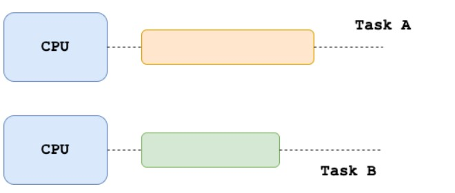

Введение в параллельные вычисления
Обычно дата-инженерам приходится получать данные из нескольких источников, а затем очищать их и агрегировать. Часто эти процессы необходимо применять на больших объемах данных.
Сегодня мы рассмотрим одно из самых фундаментальных понятий в области вычислительных технологий и в частности дата-инженерии — параллельные вычисления. С их помощью современные приложения могут обрабатывать огромные объемы данных за относительно небольшие промежутки времени.
Обсудим преимущества параллельных вычислений в целом, а также их недостатки. Изучим несколько программных пакетов и фреймворков, использующих возможности современных многоядерных систем и кластеров компьютеров для распределения и параллелизации рабочих нагрузок.
Определение параллельного программирования
Параллельные вычисления лежат в основе большого количества современных инструментов обработки данных. Эти фреймворки используют вычислительную мощность и память. Современные машины предлагают их таким образом, что основная задача может быть разбита на подзадачи, которые могут выполняться параллельно на нескольких компьютерах.

Множественные задачи (подзадачи) в исполнении параллельного вычисления
Преимущества параллельного программирования
Первая отличительная черта параллельного программирования связана с применением многоядерных систем, которые позволяют решать задачи за меньшее время. В эпоху больших данных датасеты могут достигать невероятных размеров, и “поместить” их в одну машину — порой невыполнимая задача. Благодаря параллельным вычислениям такие наборы данных могут загружаться распределенным методом с помощью нескольких вычислительных машин.
Параллельное замедление
Помимо очевидных преимуществ, концепция параллельных вычислений имеет недостатки. Распределение задач по кластеру компьютеров сопровождается некоторыми издержками, связанными с тем, как узлы взаимодействуют друг с другом. Поэтому в некоторых случаях распределение довольно простых задач может не только не ускорить выполнение, но и замедлить его, спровоцировав параллельное замедление. Другими словами, решать небольшие и легкие задачи эффективнее (и, возможно, легче) на одной машине, чем распределять их по кластеру узлов. Еще один фактор, который нужно принимать во внимание при распараллеливании задач, — это возможность их распределения по кластеру вычислительных узлов.
Применение параллельных вычислений
Параллельные вычисления являются одной из ключевых областей в современной информатике, ставящей перед собой задачу увеличения производительности вычислительных систем путем одновременного выполнения нескольких задач. В мире, где объем данных постоянно растет, параллельные вычисления становятся все более важными, обеспечивая возможность эффективного анализа и обработки данных. Они используются в различных областях, включая науку, технику, финансы, медицину и другие.
Одним из распространенных способов реализации параллельных вычислений является использование многоядерных процессоров, где задачи могут выполняться параллельно на разных ядрах. Также существуют специализированные аппаратные ускорители, такие как графические процессоры (GPU), которые широко используются для параллельной обработки больших объемов данных.
Параллельные вычисления позволяют ускорить выполнение сложных задач, таких как обработка изображений, анализ больших наборов генетических данных, симуляции физических процессов и других. Они также играют важную роль в разработке высокопроизводительных вычислительных систем и суперкомпьютеров.
Однако параллельные вычисления также представляют собой сложную проблему, требующую правильного управления ресурсами, учета зависимостей между задачами и предотвращения возможных конфликтов при доступе к общим данным. Таким образом, успешное применение параллельных вычислений требует не только хорошего понимания алгоритмов и структур данных, но и опыта в разработке эффективных параллельных программ.